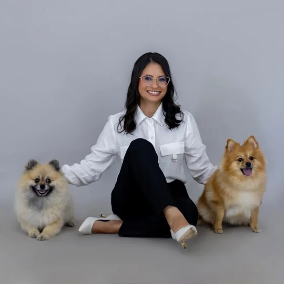

Perguntas frequentes
Respostas para o que os tutores mais perguntam antes de agendar a consulta dermatológica.
Quanto custa a consulta?
O valor atualizado e as formas de pagamento são informados no agendamento, pelo WhatsApp (17) 99616-2379.
Quanto tempo dura a consulta?
Em média, uma hora. Esse tempo permite conversar sobre o histórico, examinar o pet, fazer os exames necessários e orientar os próximos passos.
Onde fica o atendimento?
Av. Francisco Jalles, 1500, Lot. Avenida, Jales/SP, CEP 15703-200.
Precisa agendar?
Sim. As consultas acontecem somente com hora marcada, sem atendimento por ordem de chegada. Segunda a sexta, das 8h às 17h30. Sábado, das 8h às 12h.
Posso dar banho no pet antes da consulta?
O ideal é que o pet passe os três dias anteriores à consulta sem banho, para não remover da pele o que precisa ser examinado. Se ele usa algum xampu ou tratamento prescrito, confirme o preparo pelo WhatsApp antes de mudar a rotina.
O que devo levar?
Os exames anteriores e os nomes, as receitas ou as embalagens dos medicamentos e produtos que o pet já usou. Fotos da evolução das alterações também podem ajudar a contar o histórico.
Quais exames são feitos na consulta?
Conforme o caso: otoscopia clínica, avaliação com lâmpada de Wood, citologia de pele, citologia de orelha e raspado cutâneo.
A Dra. Fernanda atende gatos?
Sim. O atendimento dermatológico é para cães e gatos, com avaliação da pele, da pelagem e das orelhas.
Atende em outras cidades?
O atendimento é presencial em Jales/SP. Tutores de cidades da região podem agendar normalmente.
Sou veterinário. Posso encaminhar um paciente?
Sim. Veja como encaminhar.

Agende pelo WhatsApp
Atendimento com hora marcada em Jales/SP. Segunda a sexta, das 8h às 17h30. Sábado, das 8h às 12h.